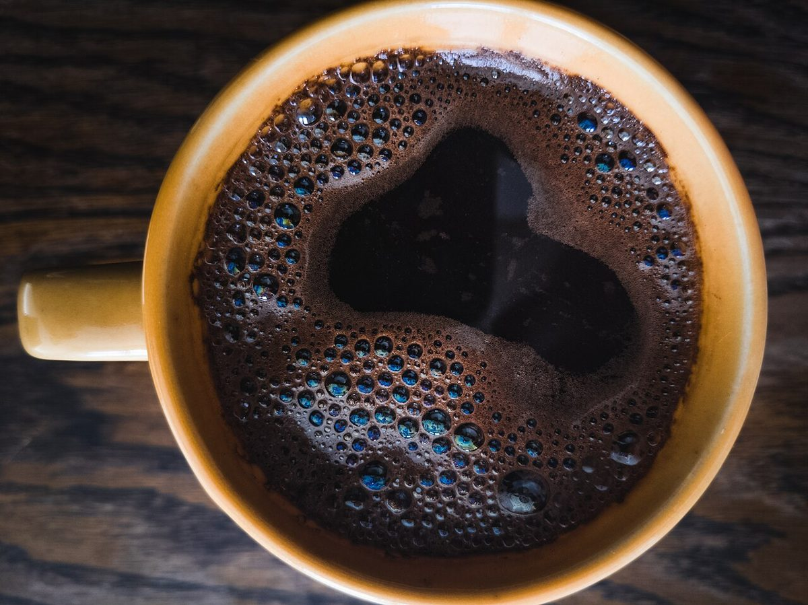
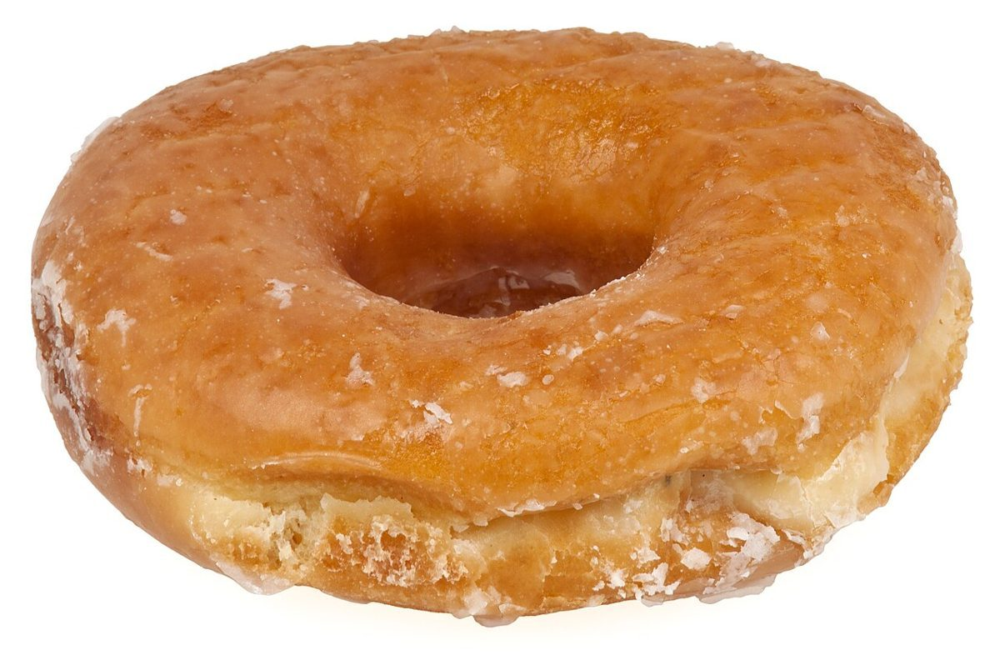

カフェ / 三重県松阪市
OjiCO
三重県松阪市のカフェ「OjiCO」のご案内ページです。営業時間やメニューなどの詳しいことは準備中です。 まずはInstagramをのぞいてみてください。

制作側の連想
輪、点、欠けた輪。
制作側は、屋号「OjiCO」の字の形から連想しました。Oは閉じた輪、jとiは点、Cは口をあけた輪。この五文字に見立てて、このサイトは「輪」と「点」の写真を並べる作りにしています。屋号の由来はわかりません。お店の理念・由来とは無関係の、制作側の連想です。
O = 閉じた輪C = ひらいた輪j・i = 点
O のページ(閉じた輪)
まるい写真、五つ。
写真は松阪市やお店のものではありません。国外または撮影地不明のフリー素材で、お店で提供しているものでもありません。




ご案内
お店のこと(確認できたものだけ)
| 所在地 | 〒515-0017 三重県松阪市京町２２１ |
|---|---|
| 電話 | 090-3483-0450 |
| 営業時間 | 準備中 |
| 定休日 | 準備中 |
| ご予約 | 準備中 |
| 駐車場 | 準備中 |
| SNS | Instagram @ojico.0303 |